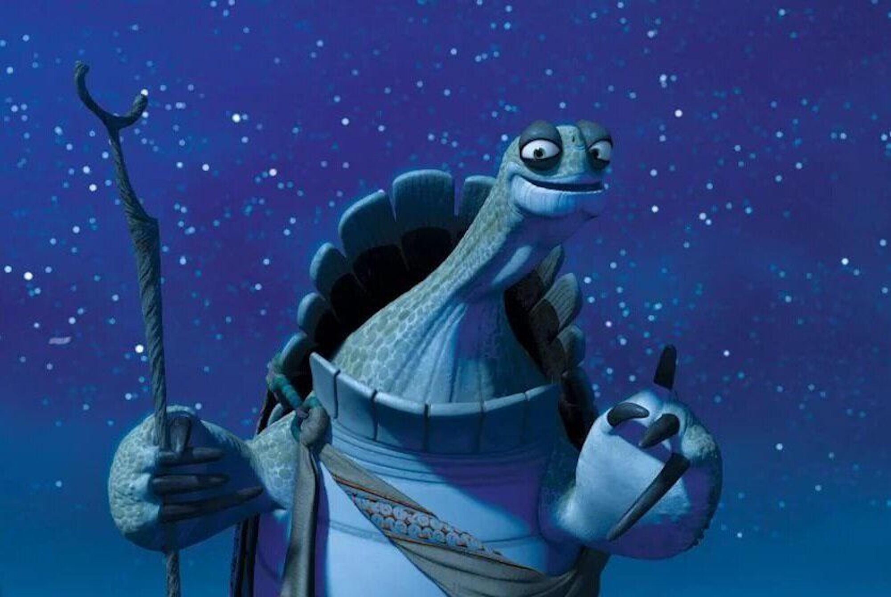

I am a photographer currently based in Japan.
This project is a collection of photos that I have taken and the stories behind them.
My favorite part of photography is the feeling I get when I am fully focused on taking a photo. By peering through a viewfinder, I find that the distractions and noise that usually crowd my brain fade away, and all that is left is just the scene before me, neatly sitting in a little frame amongst the darkness.
My hope for this project is to be able to share a part of what these moments feel like to me.
“Quit, don’t quit. Noodles, don’t noodles. You are too concerned with what was and what will be. There’s a saying: yesterday is history, tomorrow is a mystery, but today is a gift. That is why it is called the present.”
— Master Oogway, Kung Fu Panda
